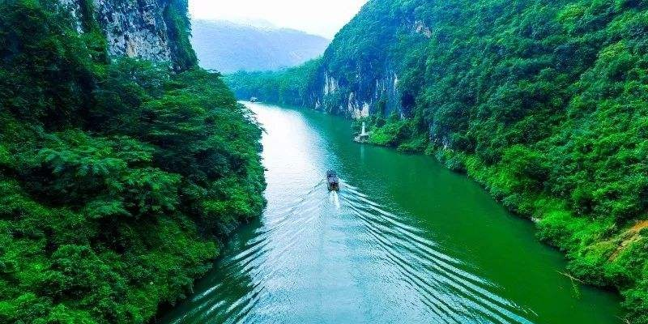

美丽清远
Tourist City Tourism city

您当前所处的位置：首页>>湟川三峡-龙潭文化生态园旅游区
湟川三峡-龙潭文化生态园旅游区

湟川三峡
湟川三峡位于从连州市区到龙潭镇的连江河段。先进入龙泉峡，可以看到胭红色的崖壁上流下十几道瀑布（下雨天时可多达几十道）泻入河中，景像十分壮观。通常在山洞内才能见到的石钟乳，在这里却露在外面。更为神奇的是，有一个石钟乳居然终年滴水不止，好似马在撒尿，因此龙泉峡也被称为“马尿峡”。
接下来是楞枷峡，河两岸山高峡深，怪石嶙峋。相传秦时有几位仙女游峡，在这里遇到风雨，一女化为石头，故此峡又名“贞女峡”。最后一段是羊跳峡，意指山羊能从河这边跳到河那边，比云南的“虎跳峡”还要夸张，其狭窄程度可以想像。此段江面逐渐收窄，江水变得墨绿，峡壁上垂吊的钟乳石似乎伸手可及，十分险峻。峡旁有一个天然的石头平台，粤语相声名家杨达和黄俊英二位来此游览时看到后，便登临石台对着青山绿水表演了一段相声。沿湟川三峡行船，一直到阳山县北部的石螺镇河段，还会经过洞冠峡、大理峡，景色也都很美。交通从连州市东3公里的龙船水闸码头登船。
地址：清远市连州市九陂镇龙潭管理区连江河段
类型：峡谷地质地貌瀑布河流表演乘船游览
游玩时间：建议2小时
电话：0763-6678683
官方网站：http://www.ltdjq.com
开放时间：
9:00-17:00（节假日8:00开始售票，截止时间以景区当日情况为准）